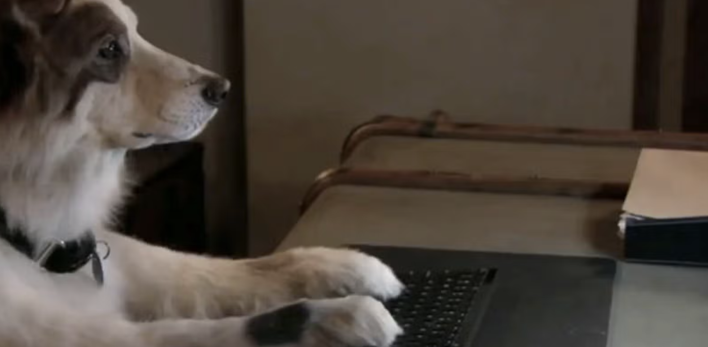

About My Page "Dog with a Blog"!
Hi there! I’m Stan. I’m a dog. Yes, that dog. I live with a perfectly nice human family who thinks I don’t talk, which is adorable because I absolutely do. I’ve got four legs, a lot of opinions, and a blog where I say all the things I can’t say out loud, such as things about my family, growing up, and why the mailman is oddly suspicious. This blog is my place to tell the truth, protect my humans, and occasionally complain about baths. If you’re here, congrats: you’re officially in on the secret. Now don’t tell anyone... shhhh!